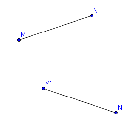
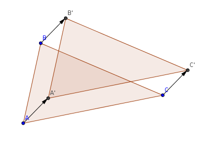
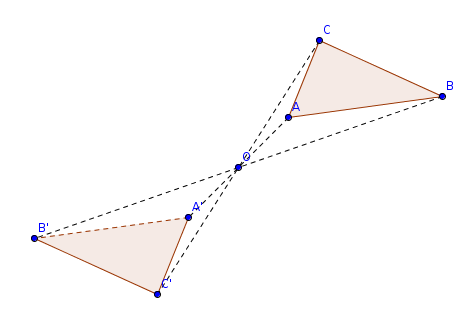
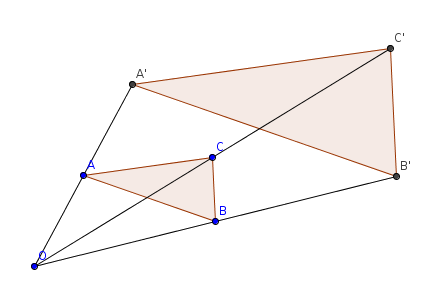
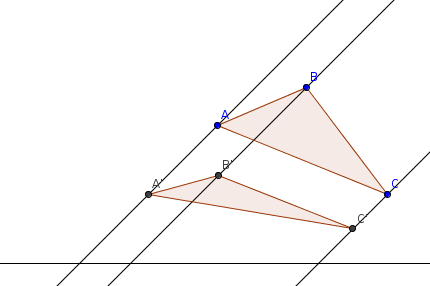
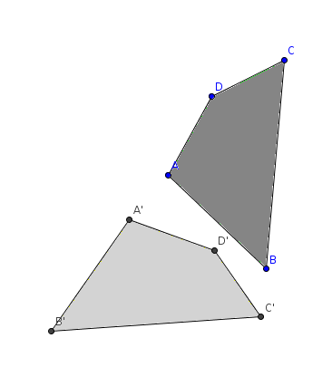
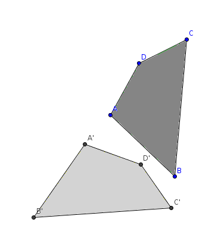

| Choisissez votre langue ! | Choose your language ! |
Définitions
On se place toujours dans le cadre d'un espace affine euclidien de dimension finie A ayant E pour espace vectoriel directeur.On suppose connus les résultats relatifs aux .
Definitions
We still eal with an affine Euclidean space of finite dimension A having E as its associated vector space.We assume that the results relating to are known.
définition 1
Une application f : A → A est appelée une
'isométrie'
si elle conserve les distances c'est à dire si ∀ (M,N) ∈ A × A on a d(f(M),f(N))=d(M,N).
definition 1
A map f: A → A is called an
'isometry'
if it preserves distances i.e. if ∀ (M,N) ∈ At × A we have d(f(M),f(N))=d(M,N).

Montrons tout de suite que :
We immediately show that:
théorème 1
Une telle application est nécessairement affine.
theorem 1
Such a mapping is necessarily affine.
Fixons une origine et soit u: E → E l'application
\( \displaystyle \overrightarrow{OM} \mapsto \overrightarrow{O'M'} \)
.
u est une application de E dans E vérifiant \( \displaystyle {\parallel \overrightarrow{u(v)} \parallel} = {\parallel \overrightarrow{v} \parallel} \) .
Donc, sachant que \( \displaystyle \overrightarrow{v} . \overrightarrow{w} = \frac{1}{2}\left( {\parallel \overrightarrow{v} + \overrightarrow{w} \parallel}^{2} - {\parallel \overrightarrow{v} \parallel}^{2} - {\parallel \overrightarrow{w} \parallel}^{2} \right) \) , il en résulte que u conserve le produit scalaire en ce sens que \( \displaystyle u\left( \overrightarrow{v} \right) . u\left( \overrightarrow{w} \right) = \overrightarrow{v} . \overrightarrow{w} \) pour tout couple de vecteurs ( \( \displaystyle \overrightarrow{v} \) , \( \displaystyle \overrightarrow{w} \) ) de E.
u transforme donc toute en une base orthonormale.
Nous montrons maintenant que u est linéaire.
Soit B=(e1, e2, ... , en)une base orthonormale, de sorte que B'=(u(e1), u(e2), ... ,u(en)) est aussi une base orthonormale.
Si v est un vecteur de coordonnées (λ1, λ2, ... , λn) on a :
En outre, u transformant une base orthonormale en une base orthonormale est bijective.
Nous tirons immédiatement de là le résultat suivant :
u est une application de E dans E vérifiant \( \displaystyle {\parallel \overrightarrow{u(v)} \parallel} = {\parallel \overrightarrow{v} \parallel} \) .
Donc, sachant que \( \displaystyle \overrightarrow{v} . \overrightarrow{w} = \frac{1}{2}\left( {\parallel \overrightarrow{v} + \overrightarrow{w} \parallel}^{2} - {\parallel \overrightarrow{v} \parallel}^{2} - {\parallel \overrightarrow{w} \parallel}^{2} \right) \) , il en résulte que u conserve le produit scalaire en ce sens que \( \displaystyle u\left( \overrightarrow{v} \right) . u\left( \overrightarrow{w} \right) = \overrightarrow{v} . \overrightarrow{w} \) pour tout couple de vecteurs ( \( \displaystyle \overrightarrow{v} \) , \( \displaystyle \overrightarrow{w} \) ) de E.
u transforme donc toute en une base orthonormale.
Nous montrons maintenant que u est linéaire.
Soit B=(e1, e2, ... , en)une base orthonormale, de sorte que B'=(u(e1), u(e2), ... ,u(en)) est aussi une base orthonormale.
Si v est un vecteur de coordonnées (λ1, λ2, ... , λn) on a :
\( \displaystyle \lambda_{i} = \overrightarrow{v} . \overrightarrow{e_{i}} = u\left( \overrightarrow{v} \right) . u\left( \overrightarrow{e_{i}} \right) \)
Ce qui prouve que\( \displaystyle u\left( \overrightarrow{v} \right) = {\sum\limits_{i = 1}^{n}\lambda_{i}u\left( \overrightarrow{e_{i}} \right)} \)
et donc que u est linéaire.En outre, u transformant une base orthonormale en une base orthonormale est bijective.
Nous tirons immédiatement de là le résultat suivant :
Fix an origin and let u: E → And the app
\( \displaystyle \overrightarrow{OM} \mapsto \overrightarrow{O'M'} \)
.
u is an application from E to E satisfying \( \displaystyle {\parallel \overrightarrow{u(v)} \parallel} = {\parallel \overrightarrow{v} \parallel} \) .
So knowing that \( \displaystyle \overrightarrow{v} . \overrightarrow{w} = \frac{1}{2}\left( {\parallel \overrightarrow{v} + \overrightarrow{w} \parallel}^{2} - {\parallel \overrightarrow{v} \parallel} ^{2} - {\parallel \overrightarrow{w} \parallel}^{2} \right) \) , it follows that u preserves the scalar product in the sense that \( \displaystyle u\left( \overrightarrow{v} \right) . u\left( \overrightarrow{w} \right) = \overrightarrow{v} . \overrightarrow{w} \) for any pair of vectors ( \( \displaystyle \overrightarrow{v} \) , \( \displaystyle \overrightarrow{w} \) ) by E.
so u transform any to an orthonormal basis.
We now show that u is linear.
Let B=(e1, e2, ... , en) be an orthonormal basis, so that B'=(u (e1), u(e2), ... ,u(en)) is also an orthonormal basis.
If v is a coordinate vector (λ1, λ2, ... , λn) we have:
Also, u transforming an orthonormal basis into an orthonormal basis is one-to-one.
From this we immediately get the following result:
u is an application from E to E satisfying \( \displaystyle {\parallel \overrightarrow{u(v)} \parallel} = {\parallel \overrightarrow{v} \parallel} \) .
So knowing that \( \displaystyle \overrightarrow{v} . \overrightarrow{w} = \frac{1}{2}\left( {\parallel \overrightarrow{v} + \overrightarrow{w} \parallel}^{2} - {\parallel \overrightarrow{v} \parallel} ^{2} - {\parallel \overrightarrow{w} \parallel}^{2} \right) \) , it follows that u preserves the scalar product in the sense that \( \displaystyle u\left( \overrightarrow{v} \right) . u\left( \overrightarrow{w} \right) = \overrightarrow{v} . \overrightarrow{w} \) for any pair of vectors ( \( \displaystyle \overrightarrow{v} \) , \( \displaystyle \overrightarrow{w} \) ) by E.
so u transform any to an orthonormal basis.
We now show that u is linear.
Let B=(e1, e2, ... , en) be an orthonormal basis, so that B'=(u (e1), u(e2), ... ,u(en)) is also an orthonormal basis.
If v is a coordinate vector (λ1, λ2, ... , λn) we have:
\( \displaystyle \lambda_{i} = \overrightarrow{v} . \overrightarrow{e_{i}} = u\left( \overrightarrow{v} \right) . u\left( \overrightarrow{e_{i}} \right) \)
Which proves that\( \displaystyle u\left( \overrightarrow{v} \right) = {\sum\limits_{i = 1}^{n}\lambda_{i}u\left( \overrightarrow{e_{i}} \right)} \)
and therefore u is linear.Also, u transforming an orthonormal basis into an orthonormal basis is one-to-one.
From this we immediately get the following result:
théorème 2
Pour que f soit une isométrie, il faut et il suffit que f soit affine et que son application linéaire associée soit orthogonale.
theorem 2
For f to be an isometry, it is necessary and sufficient that f is affine and that its associated linear map is orthogonal.
Exemples
Il résulte de la définition que :- L'application identique est une isométrie.
- Plus généralement, toute translation est une isométrie.
 - Une symétrie centrale (homothétie de rapport -1) est une isométrie.

- Une homothétie de rapport non égal à 1 ou à -1 n'est pas une isométrie.
 - Une projection sur une variété linéaire parallèlement à une direction donnée n'est pas en général une isométrie.
- Une affinité de rapport non égal à 1 ou -1 n'est pas une isométrie.

Examples
It follows from the definition that:- The identical map is an isometric.
- More generally, any translation is an isometry.
- A central reflection (dilation with ratio -1) is an isometry.
- A dilation with a ratio not equal to 1 or -1 is not an isometry.
- A projection onto a linear manifold parallel to a given direction is not in general an isometry.
- An affinity with a ratio not equal to 1 or -1 is not an isometry.
Figures isométriques
Isometric figures
définition 2
Le mot
'figure'
(géométrique) sera utilisé dorénavant et dans tout ce module comme synonyme d'ensemble de points d'un espace affine.
definition 2
The word
'figure'
(geometric) will be used from now on and throughout this module as a synonym for a set of points in an affine space.
Comme exemple de figure on parlera parfois du
'triangle'
ABC soit pour désigner :
Ainsi par exemple pour l'ensemble des points du plan situés à la distance R de A, nous dirons le 'cercle' de centre A et de rayon R.
Mais si on veut parler de l'ensemble des points du plan situés à une distance d ≤ R de A, nous devrons dire le 'disque fermé' de centre A et de rayon R.
- L'ensemble fini des 3 sommets
- L'ensemble de tous les points des 3 segments [AB], [AC] et [BC]
- L'ensemble précédent des points du pourtour augmenté de tous les points intérieurs
Ainsi par exemple pour l'ensemble des points du plan situés à la distance R de A, nous dirons le 'cercle' de centre A et de rayon R.
Mais si on veut parler de l'ensemble des points du plan situés à une distance d ≤ R de A, nous devrons dire le 'disque fermé' de centre A et de rayon R.
As an example of a figure, we will sometimes speak of the
'triangle'
ABC either to designate:
So for example for all the points of the plane located at the distance R from A, we will say the 'circle' with center A and radius R.
But if we want to talk about the set of points of the plane located at a distance d ≤ R of A, we will have to say the 'closed disk' with center A and radius R.
- The finite set of the 3 vertices
- The set of all points of the 3 segments [AB], [AC] and [BC]
- The previous set of boundary points plus all interior points
So for example for all the points of the plane located at the distance R from A, we will say the 'circle' with center A and radius R.
But if we want to talk about the set of points of the plane located at a distance d ≤ R of A, we will have to say the 'closed disk' with center A and radius R.
définition 3
Deux figures F et F' d'un même espace affine A sont dites 'isométriques' si elles se correspondent dans une isométrie, c'est à dire s'il existe une isométrie f: A → A telle que f(F)=F'.
definition 3
Two figures F and F' of the same affine space A are said to be 'isometric' if they correspond in an isometry, ie if there is an isometry f: A → A such that f(F)=F'.
Il va de soi que :
It is obvious that :
théorème 3
La relation ci-dessus est une .
theorem 3
The relation above is an .
Toute figure est en effet isométrique à elle-même (l'application identique est une isométrie).
Si F et F' se correspondent par f alors F' et F se correspondent par f-1 (qui est aussi une isométrie).
Enfin si F correspond à F' par f et F' correspond à F" par g alors F correspond à F" par gof, c'est la transitivité.
Deux figures isométriques :

Si F et F' se correspondent par f alors F' et F se correspondent par f-1 (qui est aussi une isométrie).
Enfin si F correspond à F' par f et F' correspond à F" par g alors F correspond à F" par gof, c'est la transitivité.
Deux figures isométriques :

Remarque
Dans les traités de géométrie anciens on parlait de figures 'égales' au lieu de figures 'isométriques'. Cet usage n'est pas conforme aux conventions de la théorie des ensembles, cependant il est possible de rencontrer encore cette appellation dans des exposés peu rigoureux (on parlera par exemple de 'triangles égaux').Groupe des isométries
Il résulte de ce que nous avons vu plus haut que : Any figure is indeed isometric to itself (the identical map is an isometry).
If F and F' correspond by f then F' and F correspond by f-1 (which is also an isometry).
Finally if F corresponds to F' by f and F' matches F" by g then F matches F" by gof, this is transitivity.
Two isometric figures:
If F and F' correspond by f then F' and F correspond by f-1 (which is also an isometry).
Finally if F corresponds to F' by f and F' matches F" by g then F matches F" by gof, this is transitivity.
Two isometric figures:
Note
In ancient treatises on geometry they spoke of 'equal' figures instead of 'isometric' figures. This usage does not conform to the conventions of set theory, however it is possible to still encounter this designation in less rigorous presentations (one will speak for example of 'equal triangles').Group of isometries
It follows from what we have seen above that:théorème 4
Les isométries de A sont des applications bijectives.
theorem 4
The isometries of A are one-to-one mappings.
théorème 5
La composée de deux isométries est encore une isométrie.
theorem 5
The composite of two isometries is still an isometry.
Nous voyons donc que :
So we see that :
théorème 6
Les isométries de A forment un sous-groupe du de A. Nous noterons ce groupe Is(A)
theorem 6
The isometries of A form a subgroup of the of A. We will denote this group Is(A)
|
Création Gilles Dubois
Created by Gilles Dubois
|
Janvier 2022
January 2022
|
Version mobile Jquery
Mobile Jquery version
|
|